Keyword type: model definition, material
This option is used to define the hyperelastic properties of a material. There are two optional parameters. The first one defines the model and can take one of the following strings: ARRUDA-BOYCE, MOONEY-RIVLIN, NEO HOOKE, OGDEN, POLYNOMIAL, REDUCED POLYNOMIAL or YEOH. The second parameter N makes sense for the OGDEN, POLYNOMIAL and REDUCED POLYMIAL model only, and determines the order of the strain energy potential. Default is the POLYNOMIAL model with N=1. All constants may be temperature dependent.
Let , and be defined by:
and be defined by:
| (797) | |||
| 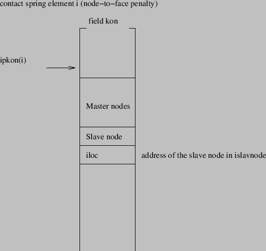 | (798) | ||
| 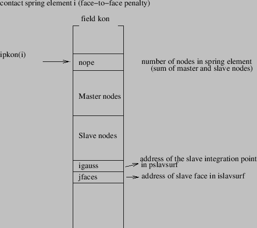 | (799) |
| (800) |
The Arruda-Boyce strain energy potential takes the form:
| 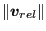 | |||
| 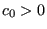 | (801) | ||
| 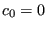 |
The Mooney-Rivlin strain energy potential takes the form:
| 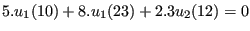 | (802) |
The Neo-Hooke strain energy potential takes the form:
 | (803) |
The polynomial strain energy potential takes the form:
 | (804) |
The reduced polynomial strain energy potential takes the form:
| 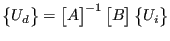 | (805) |
The Yeoh strain energy potential is nothing else but the reduced polynomial strain energy potential for 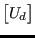.
Denoting the principal stretches by ,  and 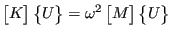 (
and 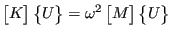 (  , and
, and  are the eigenvalues of the right Cauchy-Green deformation tensor) and the deviatoric stretches by
are the eigenvalues of the right Cauchy-Green deformation tensor) and the deviatoric stretches by  , 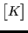 and
, 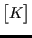 and  , where
, where  , the Ogden strain energy potential takes the form:
, the Ogden strain energy potential takes the form:
 | (806) |
The input deck for a hyperelastic material looks as follows:
First line:
Following line for the ARRUDA-BOYCE model:
Following line for the MOONEY-RIVLIN model:
Following line for the NEO HOOKE model:
Following line for the OGDEN model with N=1:
Following line for the OGDEN model with N=2:
Following lines, in a pair, for the OGDEN model with N=3: First line of pair:
Following line for the POLYNOMIAL model with N=1:
Following line for the POLYNOMIAL model with N=2:
Following lines, in a pair, for the POLYNOMIAL model with N=3: First line of pair:
Following line for the REDUCED POLYNOMIAL model with N=1:
Following line for the REDUCED POLYNOMIAL model with N=2:
Following line for the REDUCED POLYNOMIAL model with N=3:
Following line for the YEOH model:
Example: *HYPERELASTIC,OGDEN,N=1 3.488,2.163,0.
defines an ogden material with one term: = 3.488,  = 2.163, =0. Since the compressibility coefficient was chosen to be zero, it will be replaced by CalculiX by a small value to ensure some compressibility to guarantee convergence (cfr. page
= 2.163, =0. Since the compressibility coefficient was chosen to be zero, it will be replaced by CalculiX by a small value to ensure some compressibility to guarantee convergence (cfr. page  ).
).
Example files: beamnh, beamog.